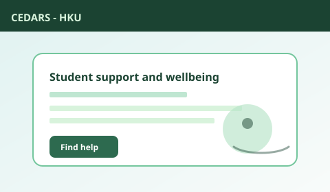

身心健康：稳定节律，真实支持
本页提供面向一般学生的生活建议，并非医疗意见。若症状持续或出现危机，请寻求专业服务，并联系适合你所在地的紧急号码。
若你或他人面临即时危险，请先联系当地紧急服务，再通过港大官方渠道求助。

对许多人有用的日常模式
- 把睡眠写进日程，而不是午夜剩下的“边角时间”。
- 日光与活动——短步行常常比“完美健身计划”更可持续。
- 连接感——每天一次低压力的社交触点（信息、共餐、社团）。
- 减少羞耻循环——若错过截止日，尽早走官方补救路径。
本页提供面向一般学生的生活建议，并非医疗意见。若症状持续或出现危机，请寻求专业服务，并联系适合你所在地的紧急号码。
若你或他人面临即时危险，请先联系当地紧急服务，再通过港大官方渠道求助。
